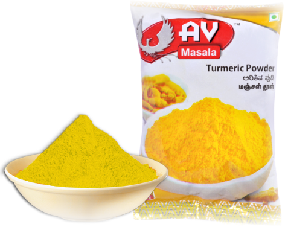
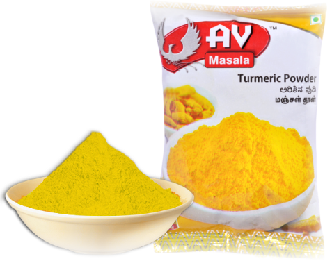

Our Products
Spices
Turmeric A garden-fresh turmeric powder that has a golden-yellow colour. Known for its high carcumin (colour property) content. It is a popular variety in India, where turmeric is used as a key colouring agent in curries.
Turmeric A garden-fresh turmeric powder that has a golden-yellow colour. Known for its high carcumin (colour property) content. It is a popular variety in India, where turmeric is used as a key colouring agent in curries.